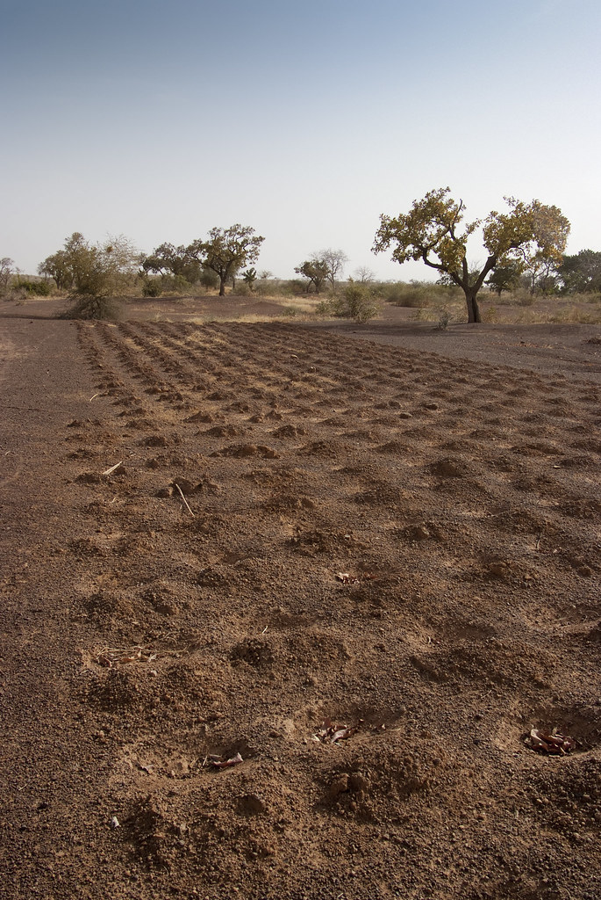

Finger Millet (Ragi)
Calcium-rich Himalayan grain, suitable for nutraceutical, cereal, bakery, and health-food brand applications.
Typical profile (indicative):
• Protein: around 6.8–7.5%
• Fiber: around 3.5–4.2%
• Calcium: generally high vs. common cereals
• Moisture: target <12% at dispatch
Documentation options:
• Organic, residue-free production focus
• Destination-market documentation prepared on request
• Per-lot third-party lab testing available
Packaging: 25kg, 50kg, 1MT jute bags (custom options on request)
Indicative MOQ: 500kg (subject to confirmation)
• Protein: around 6.8–7.5%
• Fiber: around 3.5–4.2%
• Calcium: generally high vs. common cereals
• Moisture: target <12% at dispatch
Documentation options:
• Organic, residue-free production focus
• Destination-market documentation prepared on request
• Per-lot third-party lab testing available
Packaging: 25kg, 50kg, 1MT jute bags (custom options on request)
Indicative MOQ: 500kg (subject to confirmation)
Values are indicative and vary by crop year, variety, and growing region. Actual specifications are confirmed per lot.
Bulk raw material